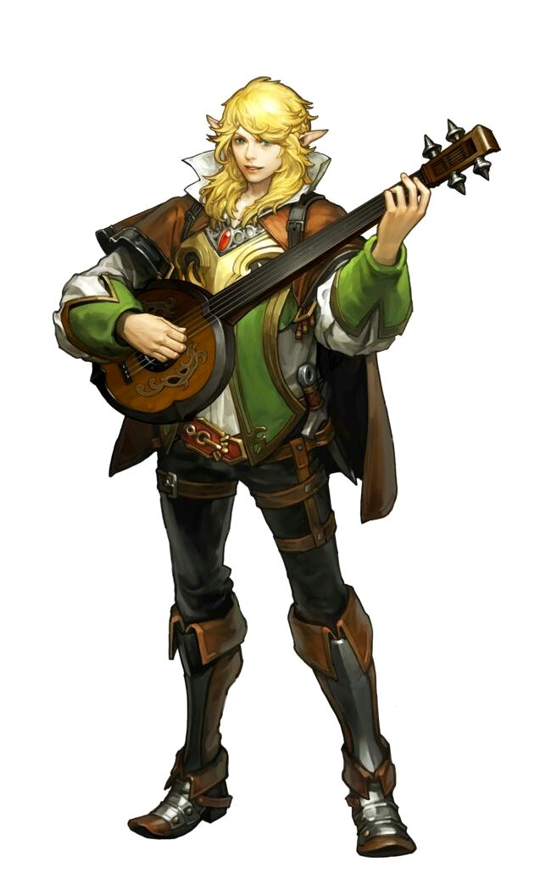
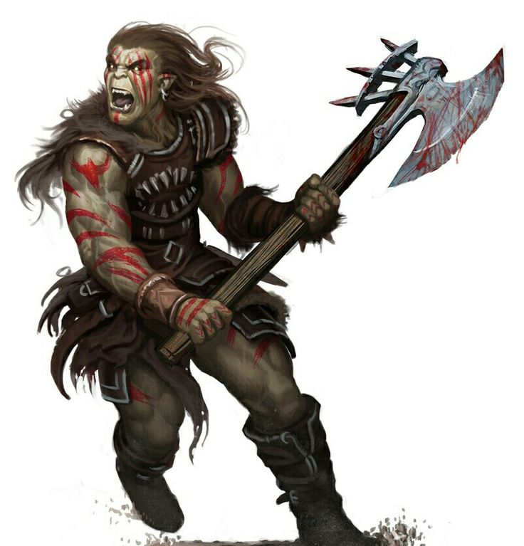
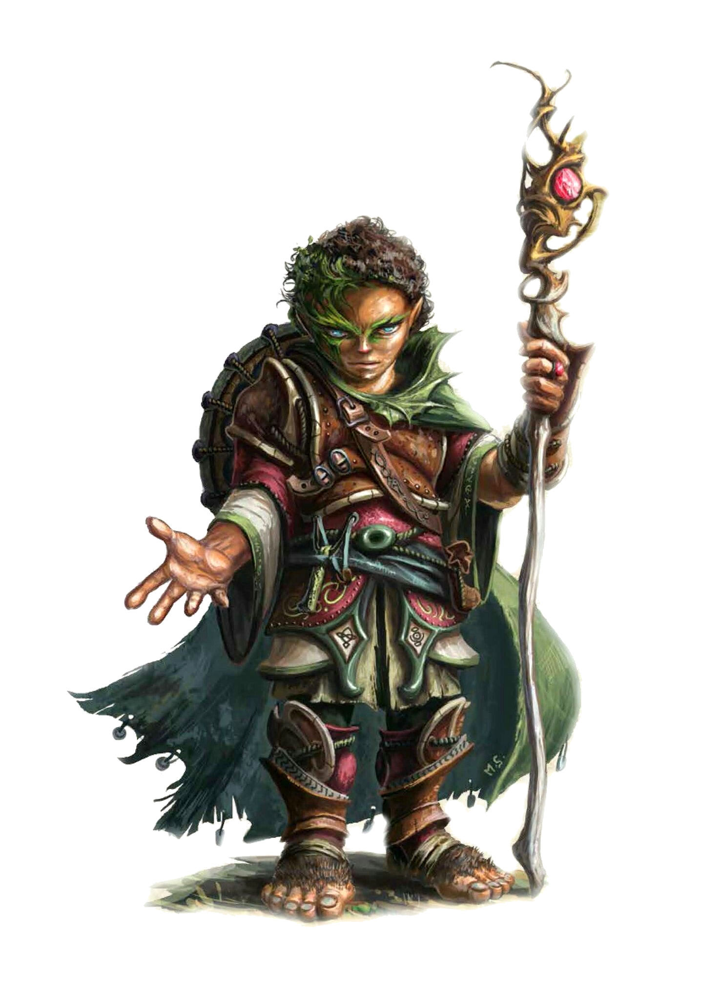
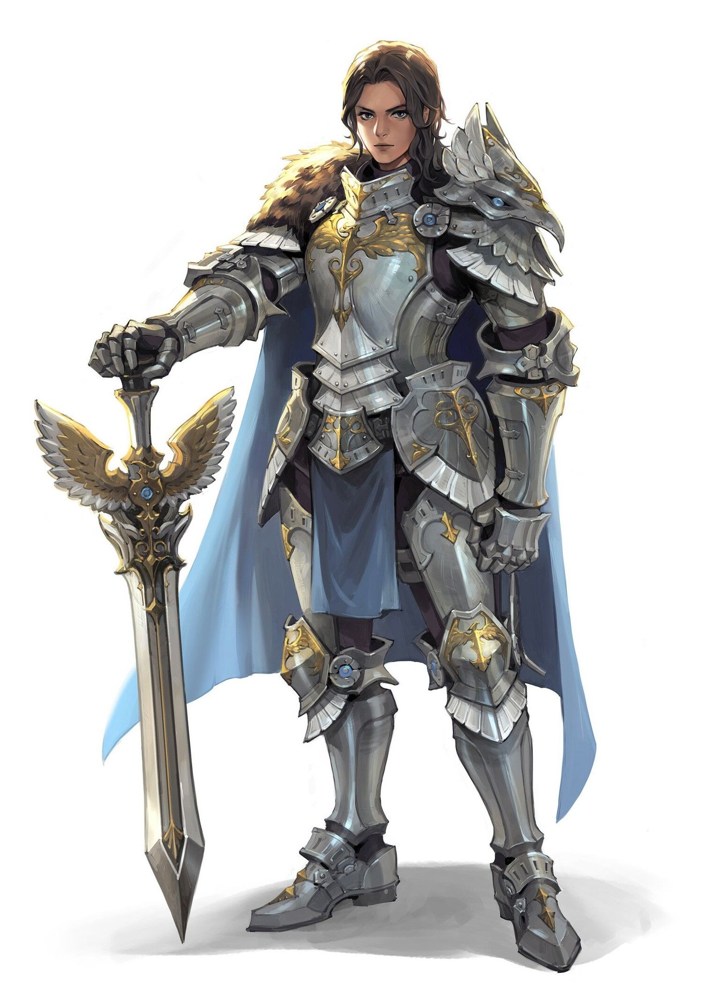
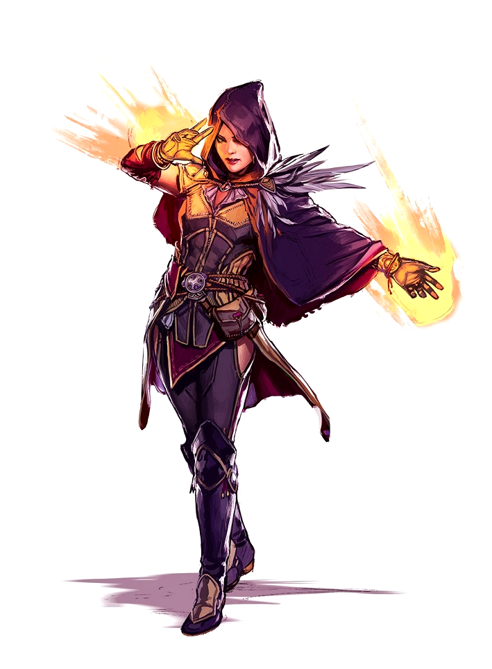

Классы в Pathfinder Adventure
В Pathfinder Adventure представлены разнообразные классы персонажей, каждый из которых предлагает уникальный стиль игры и специализацию. Вот краткое описание некоторых основных классов:

Бард (Bard)
Барды хорошо умеют запутывать и выводить из строя врагов, а также вдохновлять и усиливать союзников. Бард сражается и оружием, и магией, причем предпочитает держаться подальше от ближнего боя, чтобы, поддерживая товарищей и подкашивая врагов, не опасаться, что его выступление прервут.

Варвар (Barbarian)
Варвары - превосходные бойцы, чья стойкость и воинственность позволяют справляться с врагами, калось бы превосходящими их силой. Ярость дарует им мощь и храбрость, равных которым нет. Варвары устремляются в бой, сметая все на своем пути.

Воин (Fighter)
Место воинов в гуще боя - они прекрасно умеют выживать и побеждать врагов. Им доступны самые разные тактики, и в прямом противостоянии с воинами мало кто сможет потягаться.

Волшебник (Whzard)
Если волшебники-универсалы готовятся к решению любых проблем, то волшебники-специалисты изучают школы магии, которые позволяют им достигать высочайшего мастерства в одной определенной области. Но вне зависимости от своего выбора, все волшебники творят порой, казалось бы, невозможные вещи и готовы помочь своим союзникам в любой ситуации.

Друид (Druid)
Одни друиды держатся подальше от гущи боя - за них сражаются верные звери и призванные существа, пока сами они поражают врагов магией издалека. Другие превращаются в опасных зверей и бросаются в ближний бой. Друиды поклоняются персонификации стихий, силам природы или просто самой природе. Как правило, это означает служение божеству природы, но иногда - духам, звероподобным полубогам или отдельным впечатляющим природным явлениям.

Жрец (Cleric)
Всегда готовые защитить честь своего божества в бою, жрецы могут быть стойкими и умелыми бойцами. Но истинная сила жрецов - в их способности обращаться к божественной мощи для усиления себя и союзников, для сокрушения врагов или для исцеления раненых. Сила их зависит от веры в определенное божество или философский принцип - в последнем случае они служат самой идее войны, смерти, справедливости или знания, не пытаясь представить их в виде богов. Если вы хотите создать жреца именно последнего типа, вам понадобится доработать концепцию такого философского принципа с ведущим.

Монах (Monk)
Монахи прекрасно преодолевают даже самые неожиданные опасности и наносят сокрушительные удары, пользуясь уязвимостями противника. Они очень быстры и легко перемещаются по полю боя, помогая союзникам там, где особенно нужны.

Паладин (Paladin)
Паладины служат примером и опорой для своих товарищей среди хаоса сражений. Они и сокрушают зло, и поддерживают своих спутников в битве за веру. Их магические и боевые навыки позволяют им защищать соратников и возвращать в строй раненых.

Плут (Rogue)
Плуты прекрасно умеют передвигаться незаметно и застигать противника врасплох, однако прямых боевых столкновений они обычно избегают. Разнообразные навыки и способности позволяют им быть весьма гибкими, и каждый плут специализируется в чем-то своем. Однако почти все они искусны в преодолении препятствий, будь то запертые двери, обычные и магические ловушки или глупые, легко поддающиеся обману враги.

Следопыт (Ranger)
Следопыты - подвижные бойцы, способные атаковать с дистанции или в ближнем бою, быстро нападать и быстро отступать. Их способности позволяют им наносить особенно много урона определенным типам врагов, но основная масса умений следопыта применима в бою с самыми разнообразными противниками.

Чародей (Sorcerer)
Чародеи знают мало заклинаний, но умеют применять их часто, что делает их устрашающей боевой силой. По мере расширения своего репертуара чар они обнаруживают новые и необычные способы их применения, редко замечаемые другими заклинателями. Благодаря своему наследию чародеи получают дополнительные способности, отличающие их друг от друга.